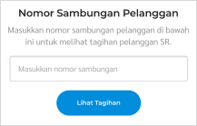

- Masuk ke menu “Tagihan” lalu pilih "Tagihan SR" di sidebar menu kiri.
- Masukkan nomor sambungan pelanggan atau cari pelanggan berdasarkan nama/ alamat


- Tekan tombol "Lihat Tagihan" untuk proses selanjutnya.
- Pilih menu "Riwayat" di bagian kiri atas.